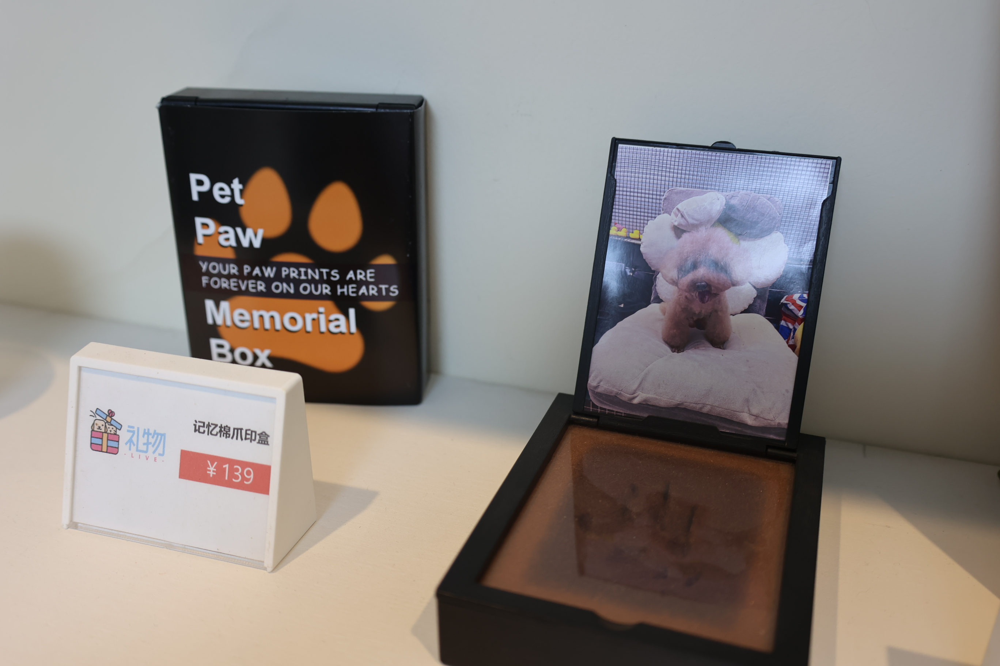
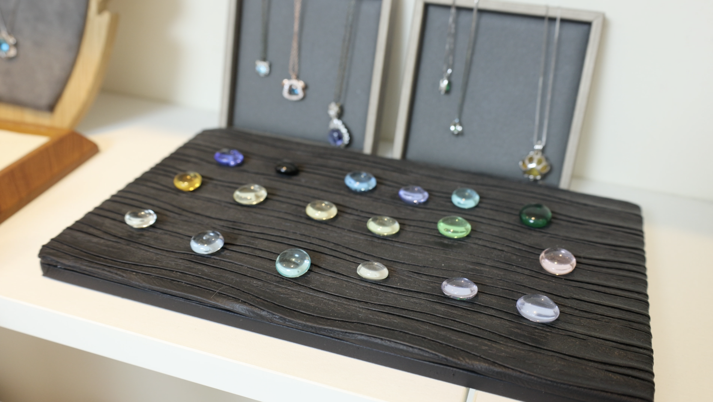
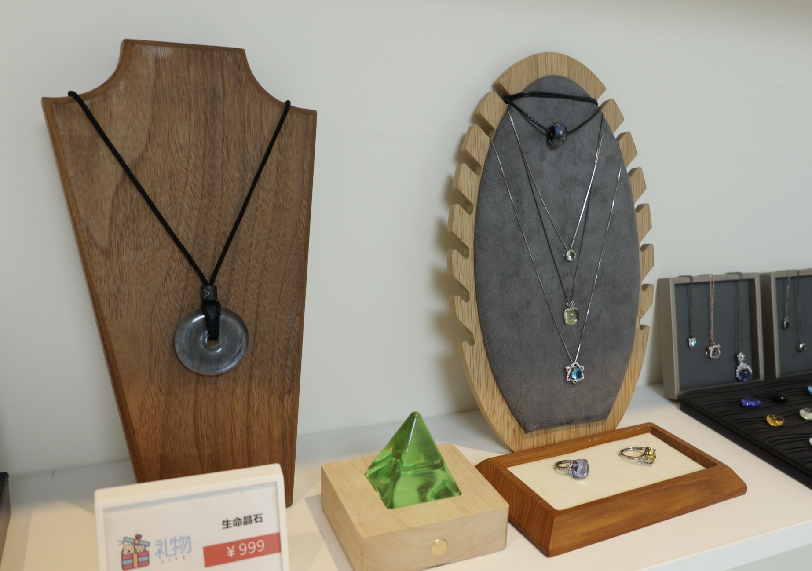
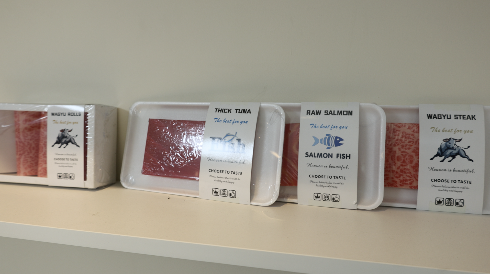
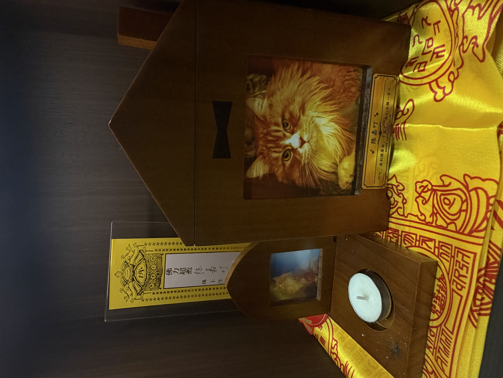
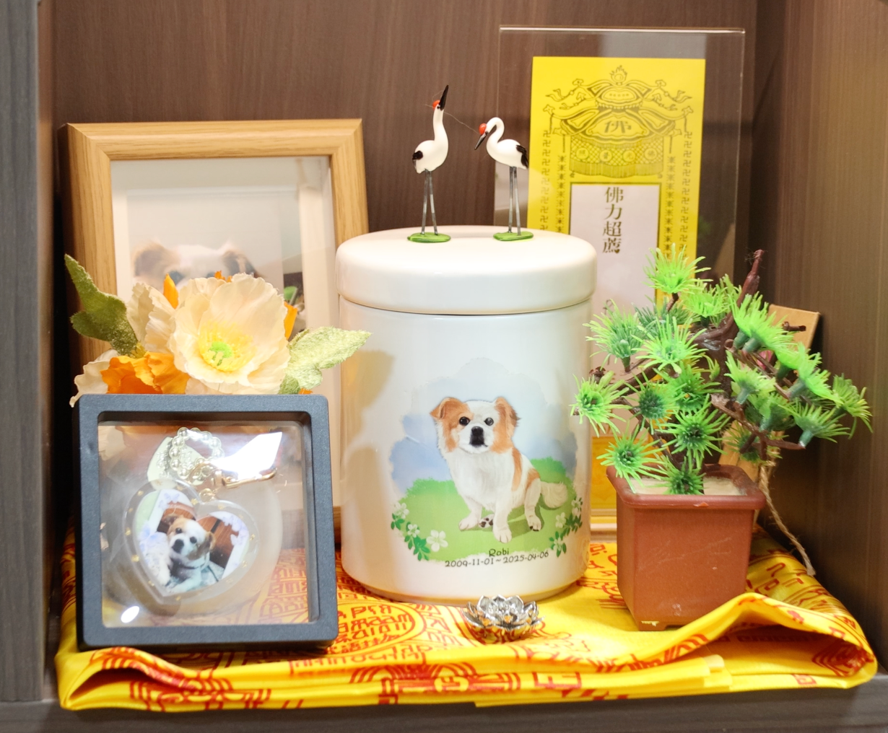
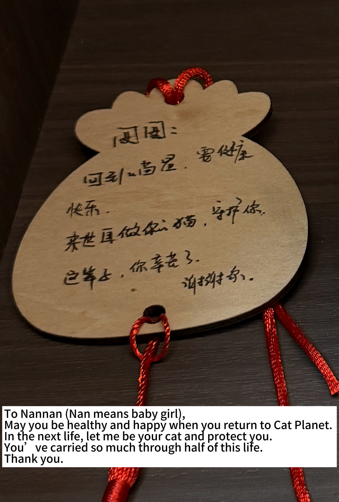
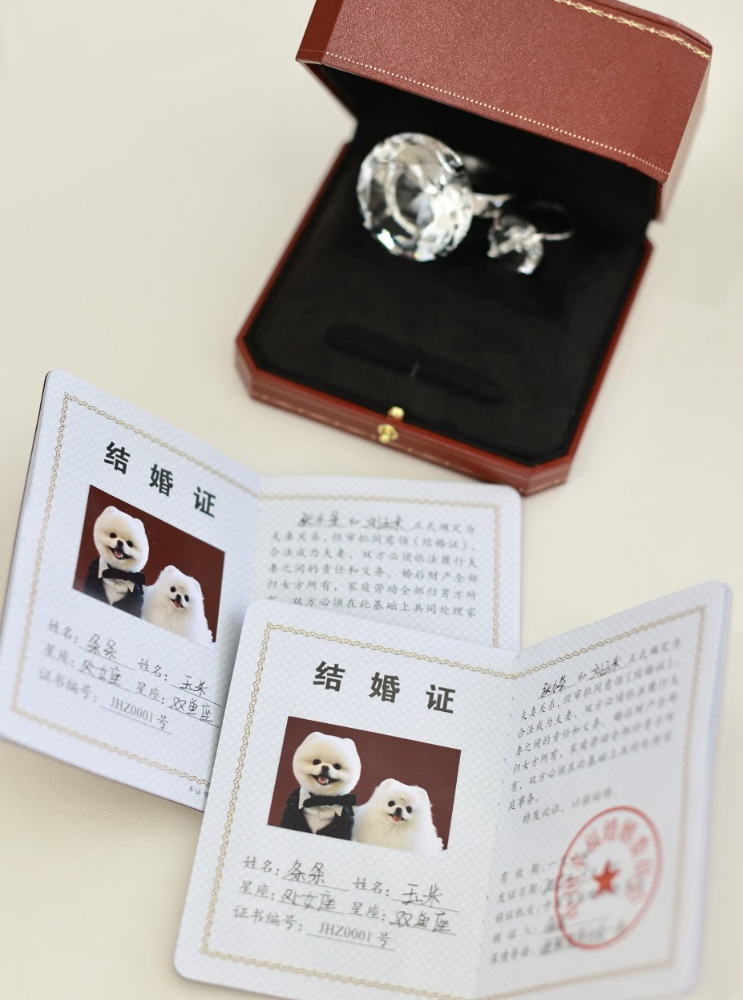
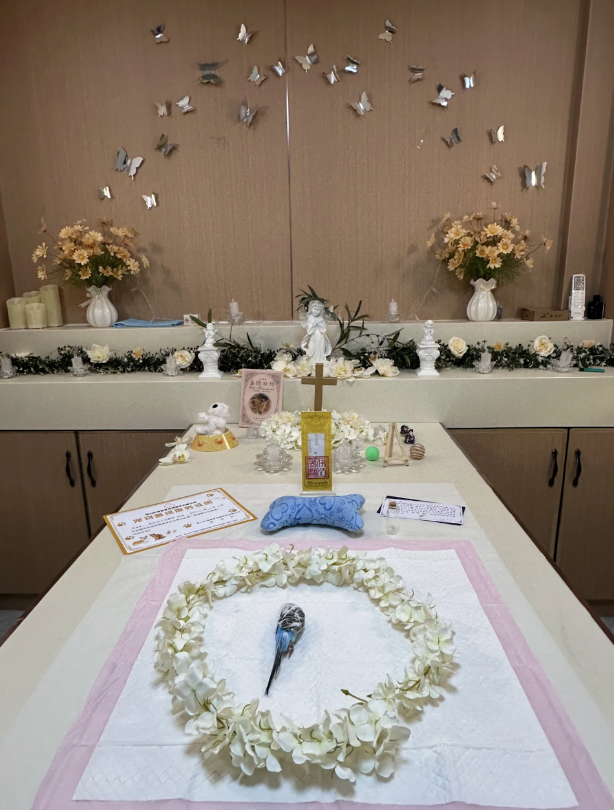
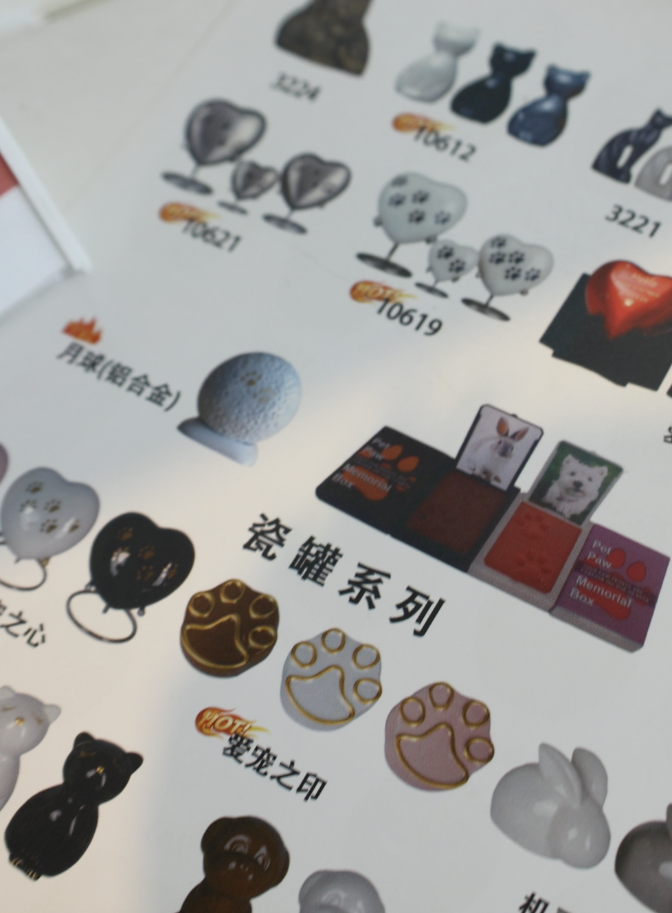

124 million
Urban pet cats and dogs in China in 2024
In China’s growing pet economy, end-of-life services have become a space where grief, ritual, commerce and companionship meet.
At Live (Li Wu), a pet end-of-life service shop in Haizhu District, Guangzhou, soft music plays in the room. A Samoyed lies on a ceremony table quietly covered with a white cloth. The staff gently brush its fur, trim stray hair around its ears and paw pads, and then cover it with a burial blanket, which carries blessings for the deceased to journey to heaven in Buddhist tradition. The Rebirth Mantra plays in the room, and on the altar are the dog’s favorite beef jerky and toys, prepared by its owner. After this body grooming process, the owner was left alone for a final goodbye to her “family.” Her wails could be heard through the wall.
In recent years, China’s pet industry has grown rapidly. With declining marriage rates and a growing number of people living alone, pets have been seen as family members and become important sources of emotional companionship, and many owners are willing to provide more attentive care to express affection and find emotional comfort. End-of-life services for pets have also emerged.
Click a card to explore the data.
Sources: 2025 China Pet Industry White Paper, iiMedia Research, Goldman Sachs.
In 2024, the number of pets in China
surpassed the number of children under age four.
In many households, the role of pets has gradually changed from simply being animals to emotional companions and even family members.
As pet owners tend to be younger and social attitudes toward pets become more accepting, the pet funeral industry has gradually gained recognition and the market has expanded rapidly.
Source: Market Monitor Global.




Ami said the variation comes from different chemical elements in the ashes, giving each piece a distinct personal meaning.
Hover over the crystals to explore
Blue comes from traces of boron.
Purple comes from slight twists in the ash’s inner structure during the firing process.
Calcium-rich ash content is often associated with pale, milky or light-toned crystals.
Yellow comes from nitrogen generated during the firing process.
In recent years, as more people have come to view pets as family members, end-of-life services including euthanasia, pet funeral, farewell ceremony and cremation have gradually emerged. Zhang Yina, a professor at the School of Social Development and Public Policy at Fudan University, told Shangguan News that with declining marriage rates and a growing number of people living alone, pets have become important sources of emotional companionship for many people. Owners are willing to spend significantly on pets and provide more attentive, specialized care to express affection and find emotional comfort.
For many owners, the death of a pet is no longer just a practical matter to deal with, but the end of an intimate and deep relationship. As a result, pet end-of-life services have gradually evolved from simple body cremation into a service industry that emphasizes ritual and emotional support. The farewell ceremony is often the emotional peak because it reminds owners of the time spent with their pets and helps them begin to accept the loss.
Yiyu, the “father” of a cat named Li Dudu, said after arranging an end-of-life service for her, “The farewell ceremony was held in the afternoon, and everything had been going smoothly. But the moment the cremation furnace was lit, the rain suddenly began to pour. The grief I had been holding back all day finally broke through at that instant. It felt as if even the god was mourning with me.”
“I chose the pet end-of-life service because the service was so thoughtful,” said Lynn, who recently arranged a cremation and farewell ceremony at Shanghai Rainbow Pawprints. “From the first phone call, the staff listened to my needs and handled everything with care. It gave me the room I needed to finally let everything out and just cry.”



This emotional need has grown as pets become a core part of the family. Some owners even hold weddings for their dogs. Lulu, a wedding planner who once organized a ceremony for two Pomeranians, said the team decided from the beginning to hold an outdoor lawn wedding in order to better reflect the dogs’ nature. “We also prepared wedding outfits, pet-friendly desserts, interactive activities, DIY drool bibs and even a wedding car for the dogs. The ceremony included paw-printing on a marriage certificate and a ring exchange, all of which were planned together with the pets’ owners,” she said.
These emotional ties have also led to more options for pet end-of-life services. Beyond traditional cremation, some providers are now offering aquamation, a water-based alternative. Ami said this method is becoming popular for smaller or more fragile pets, such as birds or snakes, as it preserves their tiny bone structures that might otherwise break under the high heat of the flame.
“In this industry, what we are really providing is emotional value, so personalized service is essential,” Ami said. For the storage of ashes, some providers also offer urns made from different materials to meet the needs of different families. Stainless steel urns are more durable and easier to carry during a move, while white marble urns provide better protection against moisture.
Many providers also film the entire process for owners who cannot attend in person, allowing them to take part in the farewell remotely. Most of them offer 24-hour service as well. “Because the death of a pet often comes without warning, we need to be on call at all times to respond to our clients’ needs,” Ami added.



As pet end-of-life needs grow, more providers are entering the industry. However, this rapid expansion has also exposed a gap between commercial growth and a lack of industry standards.
Ami said service quality can vary significantly from one provider to another. From the design of farewell ceremonies to the technical details of cremation or aquamation, each provider follows its own practices. “Some providers emphasize the sense of ritual and emotional support, while others focus on basic end-of-life services such as cremation,” she said.
Without unified regulations, pet owners often find it difficult to judge the quality of service, leading them to rely heavily on online reviews or recommendations from friends. Ami also said that marketing remains a challenge due to the sensitive nature of the topic. “Death is a negative topic, and social media platforms won’t promote our content because their policies discourage content related to death,” she said. “Most people only find us when they have an urgent need.”
The regulatory system of the industry also remains relatively limited. “There are no clear industry standards yet,” Ami said. “Some providers might exploit the owner’s grief to overcharge.” She said many customers are unsure why the services can be so expensive, and staff often have to explain what basic procedures are included. “We hope for more standardization in the future.”
"The key challenge for this developing industry lies in striking a balance among commercial growth, service standards, and governance, so as to build a resilient system in which needs can be responded to, risks can be controlled, and conflicts can be mediated,"
——— Yixia Cao, a professor at the School of Social Development and Public Policy at Fudan University